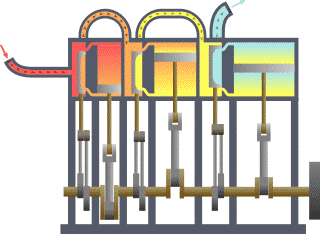

Termodinamiğin Birinci Yasası

Enerji, yoktan var edilemez; var olan enerji de yok edilemez; sadece bir şekilden diğerine dönüşür. Bir sistemin herhangi bir çevrimi için çevrim sırasında ısı alışverişi ile iş alışverişi aynı birim sisteminde birbirlerine eşit farklı birim sistemlerinde ise birbirlerine orantılı olmak zorundadır. Bu ifadelerin yapılan deneylerle doğruluğu gözlenmiştir fakat ispat edilememektedir. Bütün bu ifadeler matematiksel olarak çok daha kolay ifade edilebilir.
İç Enerjideki Değişim
ΔU = Q + W
Termodinamikte Enerji
E = U + Ek + Ep